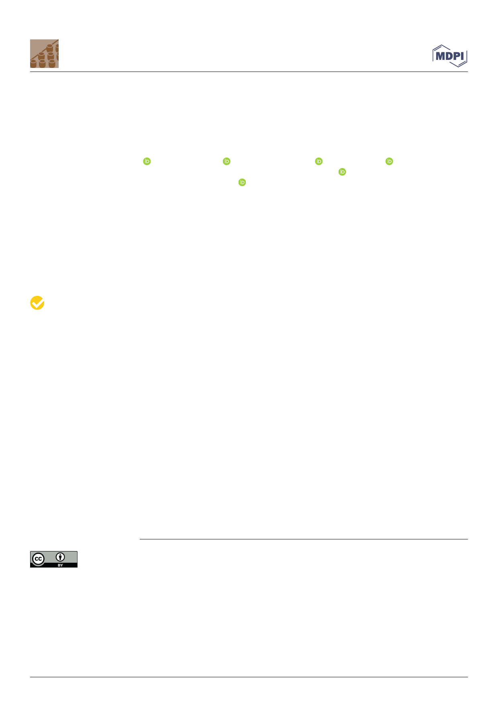

Article
Biofilm Formation on Dental Implant Biomaterials by
Staphylococcus aureus Strains Isolated from Patients with
Cystic Fibrosis
Anna Minkiewicz-Zochniak 1 , Sylwia Jarzynka 1 , Agnieszka Iwan´ ska 2 , Kamila Strom 1 ,
Bartłomiej Iwan´ czyk 3, Marta Bartel 4, Maciej Mazur 4, Anna Pietruczuk-Padzik 5 , Małgorzata Konieczna 1,
Ewa Augustynowicz-Kopec´ 2 and Gabriela Ole˛dzka 1,*
Citation: Minkiewicz-Zochniak, A.;
Jarzynka, S.; Iwan´ ska, A.; Strom, K.;
Iwan´ czyk, B.; Bartel, M.; Mazur, M.;
Pietruczuk-Padzik, A.; Konieczna, M.;
Augustynowicz-Kopec´, E.; et al.
Biofilm Formation on Dental Implant
Biomaterials by Staphylococcus aureus
Strains Isolated from Patients with
Cystic Fibrosis. Materials 2021, 14,
Academic Editor: Lucio Montanaro
Received: 6 March 2021
Accepted: 15 April 2021
Published: 17 April 2021
Publisher’s Note: MDPI stays neutral
with regard to jurisdictional claims in
published maps and institutional affil-
iations.
1 Department of Medical Biology, Medical University of Warsaw, Litewska 14/16, 00-575 Warsaw, Poland;
anna.minkiewicz@wum.edu.pl (A.M.-Z.); sylwia.jarzynka@wum.edu.pl (S.J.);
kamila.strom@wum.edu.pl (K.S.); malgorzata.konieczna@wum.edu.pl (M.K.)
2 Department of Microbiology, National Tuberculosis and Lung Diseases Research Institute, Płocka 26,
01-138 Warsaw, Poland; a.iwanska@igichp.edu.pl (A.I.); e.kopec@igichp.edu.pl (E.A.-K.)
3 The Chair and Department of Oral Surgery, Medical University of Lublin, Karmelicka 7,
20-081 Lublin, Poland; dent.iwanczyk@gmail.com
4 Department of Chemistry, University of Warsaw, Pasteura 1, 02-093 Warsaw, Poland;
mbartel@chem.uw.edu.pl (M.B.); mmazur@chem.uw.edu.pl (M.M.)
5 Department of Pharmaceutical Microbiology, Centre for Preclinical Research and Technology, Faculty of
Pharmacy, Medical University of Warsaw, Banacha 1B, 02-097 Warsaw, Poland;
anna.pietruczuk-padzik@wum.edu.pl
* Correspondence: gabriela.oledzka@wum.edu.pl
Abstract: Implants made of ceramic and metallic elements, which are used in dentistry, may either
promote or hinder the colonization and adhesion of bacteria to the surface of the biomaterial to
varying degrees. The increased interest in the use of dental implants, especially in patients with
chronic systemic diseases such as cystic fibrosis (CF), is caused by an increase in disease complica-
tions. In this study, we evaluated the differences in the in vitro biofilm formation on the surface of
biomaterials commonly used in dentistry (Ti-6Al-4V, cobalt-chromium alloy (CoCr), and zirconia)
by Staphylococcus aureus isolated from patients with CF. We demonstrated that S. aureus adherence
and growth depends on the type of material used and its surface topography. Weaker bacterial
biofilm formation was observed on zirconia surfaces compared to titanium and cobalt-chromium
alloy surfaces. Moreover, scanning electron microscopy showed clear differences in bacterial ag-
gregation, depending on the type of biomaterial used. Over the past several decades, S. aureus
strains have developed several mechanisms of resistance, especially in patients on chronic antibiotic
treatment such as CF. Therefore, the selection of an appropriate implant biomaterial with limited
microorganism adhesion characteristics can affect the occurrence and progression of oral cavity
infections, particularly in patients with chronic systemic diseases.
Keywords: biomaterials; Ti-6Al-4V; CoCr alloy; zirconia; biofilm; Staphylococcus aureus; cystic fibrosis;
SEM; AFM
Copyright: © 2021 by the authors.
Licensee MDPI, Basel, Switzerland.
This article is an open access article
distributed under the terms and
conditions of the Creative Commons
Attribution (CC BY) license (https://
4.0/).
1. Introduction
Dental implant treatment is important for the recovery process in patients with devel-
opmental and acquired dental defects. Dental implants directly improve the oral cavity
function and esthetics as well as a patient’s speech and general well-being [1,2]. In re-
cent times, medical professionals have increasingly used dental implant procedures for
tooth replacement. Consequently, there has been an increase in the number of patients
with systemic diseases requesting dental implants to replace their missing teeth [3,4].
However, the increase in demand for dental implants is also associated with an increase in